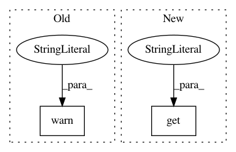

a5990b39af4ede3122d2c5e34ecc6004e865d88e,onnx_tf/backend.py,TensorflowBackend,handle_batch_normalization,#Any#Any#Any#,422
Before Change
variance = input_dict[node.inputs[4]]
variance_epsilon = node.attrs["epsilon"]
if "is_test" in node.attrs.keys():
warnings.warn("Unsupported is_test attribute by Tensorflow in "
"batch_normalization. This attribute will be ignored.",
UserWarning)
if "momentum" in node.attrs.keys():
warnings.warn("Unsupported momentum attribute by Tensorflow in "
"batch_normalization. This attribute will be ignored.",
UserWarning)
After Change
variance = cls._explicit_broadcast(input_dict[node.inputs[4]])
variance_epsilon = node.attrs.get("epsilon", 0.00001)
if node.attrs.get("is_test", 0):
return [tf.nn.batch_normalization(x, mean, variance, bias, scale,
variance_epsilon)]
if "momentum" in node.attrs.keys():
In pattern: SUPERPATTERN
Frequency: 4
Non-data size: 2
Instances
Project Name: onnx/onnx-tensorflow
Commit Name: a5990b39af4ede3122d2c5e34ecc6004e865d88e
Time: 2017-11-02
Author: tjingrant@gmail.com
File Name: onnx_tf/backend.py
Class Name: TensorflowBackend
Method Name: handle_batch_normalization
Project Name: NeuromorphicProcessorProject/snn_toolbox
Commit Name: bf20758f1001f7672aaa0e2de153b3349bc722fa
Time: 2019-06-13
Author: selin.fabel@uzh.ch
File Name: snntoolbox/simulation/target_simulators/brian2_target_sim.py
Class Name: SNN
Method Name: save
Project Name: onnx/onnx-tensorflow
Commit Name: 2a4e2b1b131d9a1b48d8eba5479b585bf328d3ba
Time: 2017-12-04
Author: tjingrant@gmail.com
File Name: onnx_tf/backend.py
Class Name: TensorflowBackend
Method Name: handle_elu
Project Name: NeuromorphicProcessorProject/snn_toolbox
Commit Name: 66268ffdc847e64216114871bd4169ad7872966a
Time: 2019-04-11
Author: bodo.rueckauer@intel.com
File Name: snntoolbox/simulation/target_simulators/pyNN_target_sim.py
Class Name: SNN
Method Name: load